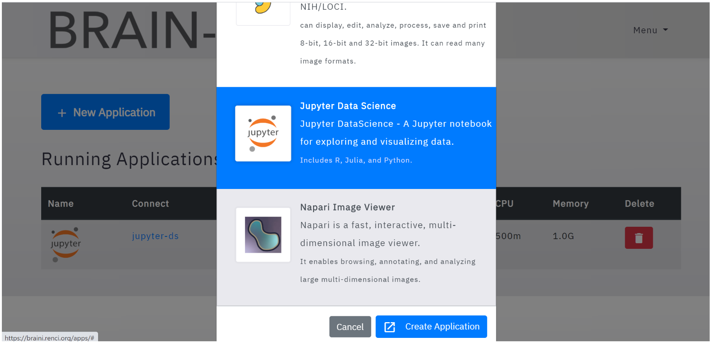
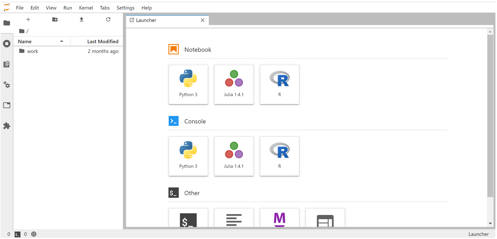
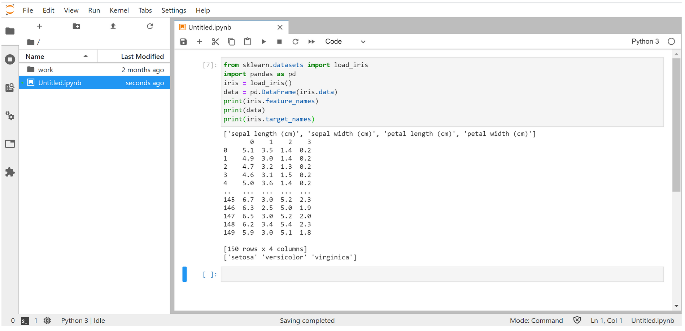

Jupyter-DataScience¶
Begin by starting the App as described in the section Creating an Application. Select the CloudTop Viewer application.
Introduction¶
Jupyter/datascience includes popular packages for data analysis from the Python, Julia and R communities and also packages are included from its ancestor images jupyter/sci-py notebook , jupyter/r-notebook and jupyter/minimal-notebook.
Some of the packages it includes are:
dask, pandas, numexpr, matplotlib, scipy, seaborn, scikit-learn, scikit-image, sympy, cython, patsy, statsmodel, cloudpickle, dill, numba, bokeh, sqlalchemy, hdf5, vincent, beautifulsoup, protobuf, xlrd, bottleneck, and pytables packages .
ipywidgets and ipymp for interactive visualizations and plots in Python notebooks.
Facets for visualizing machine learning datasets.
The Julia compiler and base environment.
IJulia to support Julia code in Jupyter notebooks.
HDF5, Gadfly, and RDatasets packages.
Working with jupyter-datascience notebook in HeLx¶
Step-1: Launch a jupyter-datascience notebook from HeLx by clicking on “Launch Application” button.
Step-2: This brings us to the jupyter-lab panel where we can select the environment that we want to work on (Python, Julia, R).
Step-3: Start working on it. Below code shows loading iris dataset (features, labels) from sklearn package to train/test our machine learning model.
